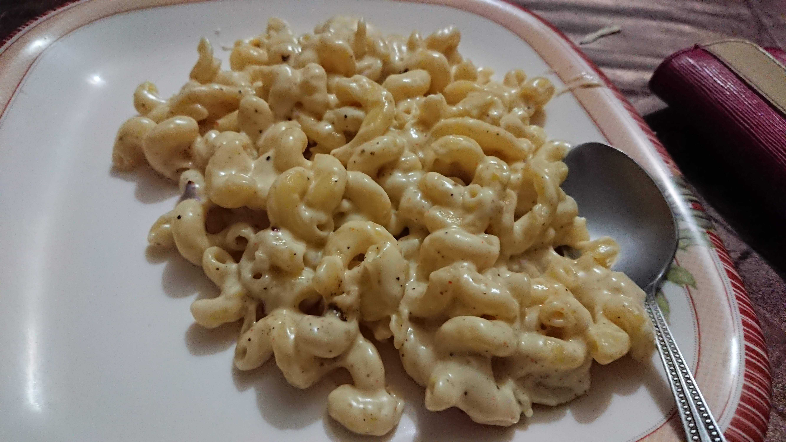

Description
The classic macaroni and cheese made using my home recipe.
Ingredients
- 1 packet of macaroni (200-300g)
- 500-600ml of milk
- 1 cup of water
- Mozzarella cheese and an additional cheese of your choice (Swiss, Parmesan, or Cheddar work well)
- Optional vegetables (diced) and/or chicken (cooked, cut into bite-sized chunks)
- Salt, black pepper, and red chili flakes (as needed)
Preparation
- Pour the milk into a large pot with the water and put the uncooked macaroni in.
- Add about 3-4 tablespoons of salt (and optional veggies and chicken) and begin cooking at medium-high heat.
- As the milk begins to thicken, stir lightly but constantly to prevent the milk from burning and the pasta from sticking to the bottom.
- Once the pasta is cooked and the milk reaches a creamy, sauce like consistency, reduce the heat to low.
- Add the rest of the seasonings and a portion of your cheese. Once it melts and mixes in, continue adding and stirring the same way until all of it is incorporated.
- Turn off the heat, ladle out the pasta into a serving tray or plate and enjoy!
Return to recipe list